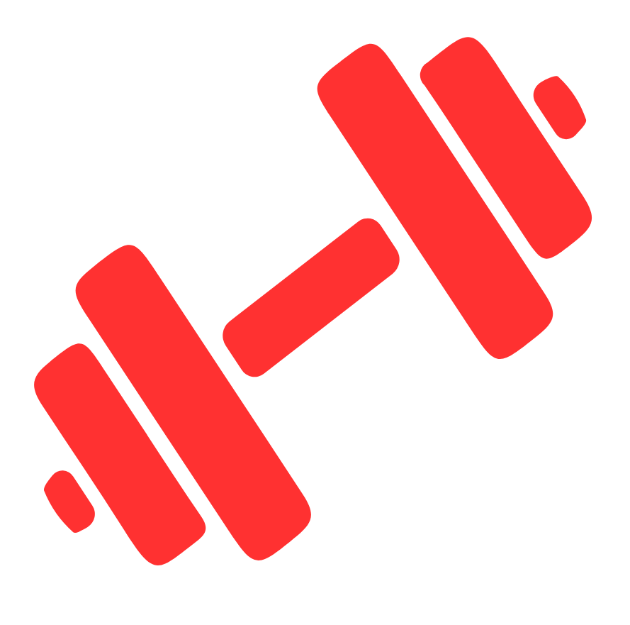

Dein Ziel ist es, endlich deine Disziplin nach außen hin zeigen zu können mit einem gestählten Körper?
Besagten Körper so zu formen, wie du es dir wünschst? Oder möchtest du auf einem Bodybuilding-Wettkampf
antreten?
Natürlich gibt es noch eine Million weitere Gründe, weshalb jeder Mensch auf diesem Planeten eine gute
Grundlage an Muskulatur haben sollte. Doch eines ist dabei immer klar: du musst wachsen. Über dich
hinaus, mental und körperlich.
Das heißt zum einen musst du es wirklich wollen. Du musst dranbleiben, auch wenn es unbequem wird. Du
musst für dein Ziel arbeiten, wieder und wieder, bis es zur absoluten Gewohnheit wird. Du musst bereit
sein, daran zu glauben, dass du heute stärker bist als gestern. Und das ist wortwörtlich so gemeint. Denn
Muskelaufbau wird nur dann stattfinden, wenn du progressiv trainierst, in jedem Training 1% mehr gibst.
Ein guter und auf dich angepasster Trainingsplan erleichtert dir das jedoch ungemein.
Die andere essenzielle Komponente ist die richtige Ernährung. Um stärker zu werden, musst du genug
essen. Das heißt, du musst mindestens auf Erhalt, wenn nicht sogar im leichten Überschuss sein, was
deine Kalorienbilanz angeht. Und dabei zählen alle Makronährstoffen. Natürlich Proteine, denn sie sind
der Baustoff deiner gewünschten Muskulatur. Aber auch Kohlenhydrate, denn ohne sie kannst du im Training
nicht performen. Und (gesunde) Fette sind wichtig für deine Hormone, damit dein Körper auch das macht,
was er soll.
33
Du siehst, es gibt schon ein paar Voraussetzungen, die erfüllt werden möchten. Doch mit dem richtigen
Plan ist auch das kein Hindernis mehr und deiner Wunschform steht nichts mehr im Wege.
Um noch mehr zu diesem Thema zu erfahren, vereinbare gern einen kostenlosen Termin mit uns. Wir werden
dir dabei helfen, die Shape deines Lebens zu erreichen und geben dir wertvolles Wissen aus unserem
Erfahrungsschatz von der Arbeit mit unseren Kunden an die Hand.